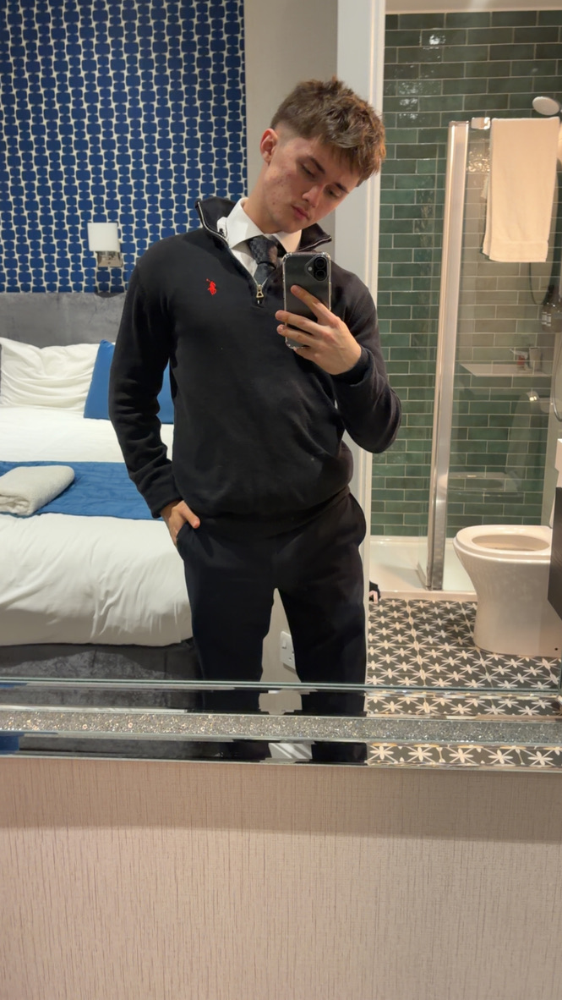

An independent research project examining whether access to adequate food should become a specific, legally protected right within the United Kingdom.

My name is Charles Pavitt. I am 18 years old, a student, political researcher, human-rights advocate and aspiring Member of Parliament.
I currently study Law, Politics and Criminology. Those subjects have developed my interest in how law, government and society interact, particularly when political principles have to be turned into policies that work in the real world.
I am a Labour Party member and have attended political meetings and events. Politics interests me because decisions made by Parliament and government eventually become real consequences for ordinary people — in their income, opportunities, education, security and standard of living.
Outside politics, I have competed at a high level in ice hockey. I have also studied sport science and nutrition, which gave me an additional perspective on how important adequate nutrition is for the human body to function, recover, learn, work and perform.
My long-term ambition is to enter public life and ultimately become an MP. I want to combine political ambition with serious research: understanding an issue, testing the argument against criticism, considering what it would cost and then asking whether government can realistically do something about it.
I want my political development to be grounded in evidence, law, economics and the experiences of the people affected by policy.
I aspire to become an MP and use politics as a way of improving people's opportunities and basic security.
I am particularly interested in where basic human needs meet questions of legal entitlement and government responsibility.
A strong political argument has to face its own weaknesses. That means examining cost, enforcement, unintended consequences and opposing views.
I want to develop ideas that can survive beyond a headline: policies that are legally coherent, financially realistic and capable of implementation.
The research argues that a right to food should concern reliable access to adequate food — not unlimited free food supplied by the government.
The argument is that nobody should be left without enough adequate, nutritious and safe food simply because they cannot afford it.
Supermarkets and the private market could continue to operate. Individuals would retain responsibility where they are capable of providing for themselves.
The UK already recognises the principle of adequate food through the International Covenant on Economic, Social and Cultural Rights.
The key issue is whether international recognition should become a specific legal protection within the United Kingdom.
A legally protected right would create costs and obligations. The research therefore examines whether the idea could be financially realistic rather than treating funding as an afterthought.
The paper estimates approximately £25 billion per year for the proposed targeted model, while recognising that the actual figure would depend heavily on the exact legal definition and eligibility rules.
The research explores spreading the cost across several sources rather than relying upon one dramatic tax increase, including higher-income taxation, capital gains and wealth measures, loophole reform, high-value property and corporate taxation.
Important: these figures are presented as research estimates and proposals rather than guaranteed government revenue forecasts.
The project does not present a right to food as a perfect solution. It tests the proposal against major legal, economic and practical objections.
Could £25 billion be justified when the NHS, education, welfare and other services also require substantial investment?
Where should state responsibility stop without government controlling individual food choices or the private market?
How should the law distinguish genuine inability to afford food from situations where somebody has the means to provide for themselves?
A legal standard must be meaningful without becoming impossible to define or enforce.
Could enforceability allow judges to influence decisions that traditionally belong to elected governments and Parliament?
A legal declaration does not itself reduce rent, increase wages, lower food prices or eliminate poverty.
After examining the legal, philosophical, economic and social arguments, I believe access to adequate food should be recognised as a specific legal right within the United Kingdom.
The purpose should be to establish a minimum responsibility upon the state: not to provide every meal to every citizen, but to ensure people are not left without adequate food simply because they cannot afford it. Any such right should be carefully defined, financially realistic, compatible with individual responsibility and capable of operating alongside the private market.
The full document contains the legal, philosophical, social and economic argument, proposed funding model, criticisms and conclusion.